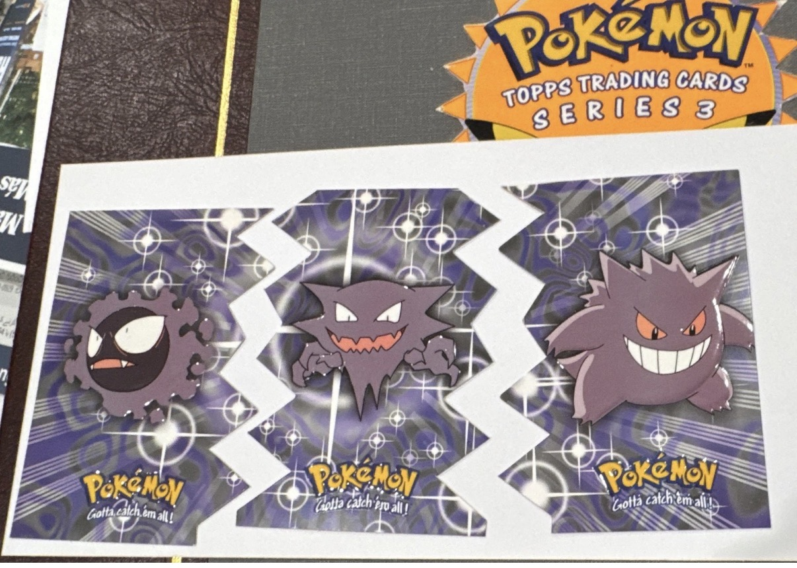
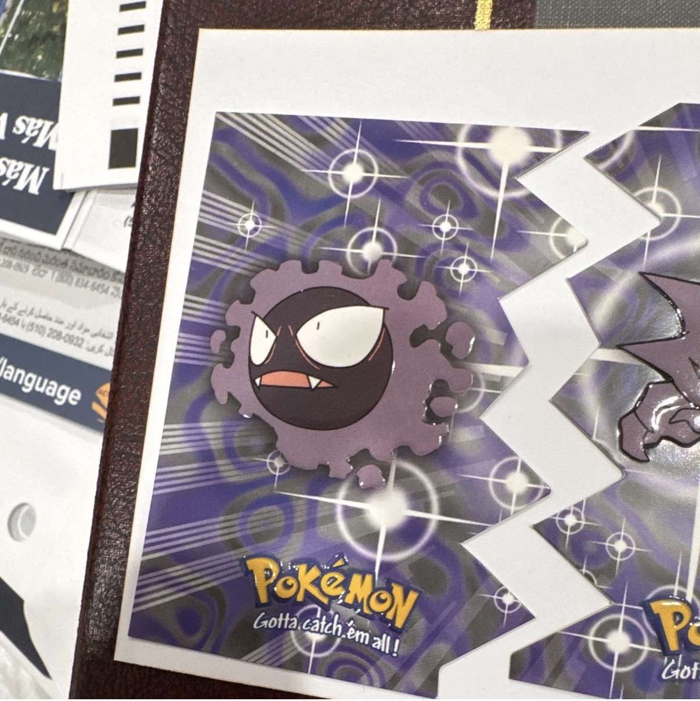
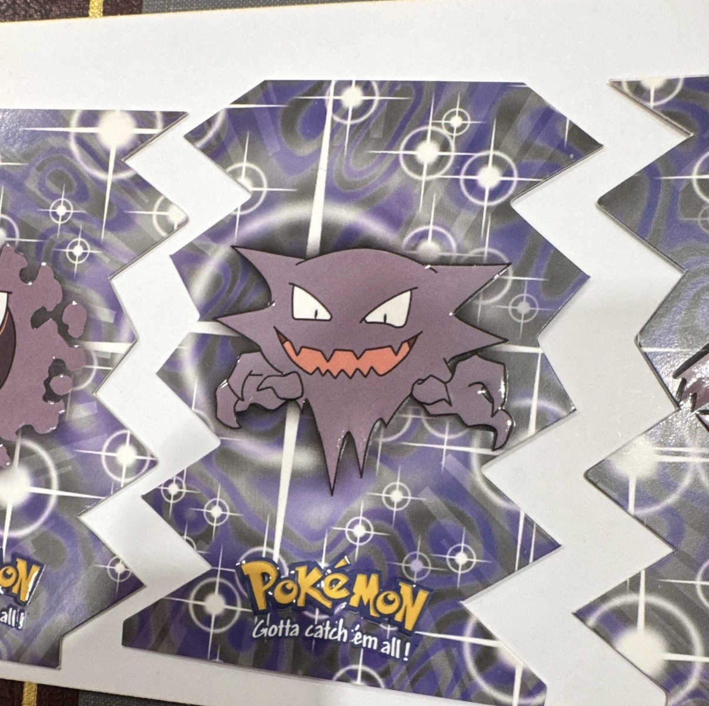
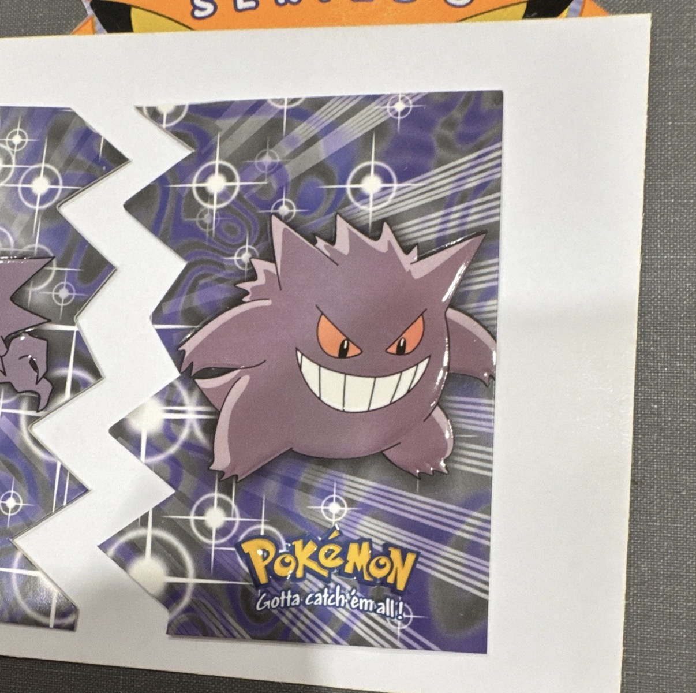

Topps Series 3. The die-cut evolution line. A thesis on what happens when art cards get treated like stickers, print runs get cut after two overproduced series, and the grading community still hasn't caught up 26 years later.

Modern Pokémon investors justify paying thousands for full-art cards and alternate-art chase cards because of the artwork. The illustration, the composition, the feeling. That reasoning is legitimate.
But then those same collectors turn around and say Topps doesn't count. Only TCG cards hold value. Only Wizards of the Coast era, only PSA 10 Base Set. Topps gets dismissed as a kid's product from a cereal aisle.
That handling is not a reason to dismiss them. It is the entire rarity argument. Modern cards sit in sleeves from pack opening. Topps die-cuts were played with, bent, connected, separated, lost. The ones that survived are not common. They are the exception.
The market has not priced that in yet. That is the opportunity.
Topps released three series of Pokémon cards. Series 1 and Series 2 were massively overproduced — they chased the peak of the Pokémon boom and flooded the market. By the time Series 3 arrived, the craze had cooled. Retail interest dropped. Topps printed accordingly.
The result is a set that is genuinely scarce at the pack level. Loose Series 3 packs surface rarely and sell for $150 or more when they do. That is not a collector markup on nostalgia. That is a market telling you the supply is real.
The Gastly, Haunter, and Gengar line sits inside those 12. EV04, EV05, EV06. One of four three-stage evolutionary lines in the die-cut chase run. The print run for the entire set was small. The die-cuts were a chase within that set. The ghost line is a specific pull within those die-cuts.
Source: Bulbapedia, "Pokémon Trading Cards series 3."
The 12 die-cut evolution cards cover four three-stage lines. All four share the same format, the same pull math, the same design fragility. But they are not equal in the market and they are not equal culturally.
Standard evolutionary families. Recognizable, collectible, and part of the same scarce set. Solid cases on their own. But they are not the ghost type. They are not Gengar.
The most iconic ghost-type line in Pokémon history. Gengar has been a fan-favorite since Generation 1, carries consistent cultural weight across every era of the franchise, and commands attention in any serious collection.
Cultural staying power matters in collectibles. Gengar is not a sleeper. It is one of the most recognized Pokémon in existence. The die-cut version of that line, from a low-print series, with zero PSA 10s on record, is not a niche argument. It is an obvious one that the market has not acted on yet.
They were designed to fit together, which means they were designed to be handled. Every time someone connected them, they introduced wear. The die-cut shape is not decorative. It is structural. And structure is exactly what graders look for when they decide whether a card deserves a 9 or a 7.



Across both major grading services, the combined tracked population for the entire three-card line sits under 100 copies. That number has not changed meaningfully in over a year. There are no warehouses of ungraded copies waiting to be submitted. The ceiling is visible and it is low.
Pulling a die-cut from a Series 3 pack was already the hard part. Pulling the specific card you needed was a separate problem entirely. With 12 possible die-cut evolution cards and an estimated pull rate of roughly one die-cut per 12 packs, the math on a specific card gets unfavorable fast.
Pull-rate estimate sourced from collector analysis. Bulbapedia supports the 12-card die-cut embossed Evolution chase structure. Pack pricing based on current marketplace activity — listings are rare and sell quickly when they appear.
A rectangle has four sides. This line has points, notches, exposed corners, gloss, embossing, and interlocking edges. Every cut is another place a grader can punish. This was not a design choice made with collectors in mind. It was made with children in mind. That is why so few survived in gradeable condition.
The chase is not just finding the card. It is finding one that survived every step between a pack in 2000 and a grading submission today.
Not zero available for sale. Zero in the population. Across every card ever submitted to PSA for this line, not one has received a perfect grade. The design made that nearly impossible. That is not a problem for the thesis. That is the thesis.
PSA and CGC population across all three cards, all grades combined. These counts have not meaningfully changed in over a year. No flood of new submissions. No discovery of old stock. No bulk submissions from an estate sale. The ceiling is visible and it is low.
CGC adds a small additional count across the line — single digits per card. Combined across both services the total tracked population for the entire three-card ghost line sits under 100. Refresh PSA and CGC for current numbers before citing.
At any given moment there are only a handful of listings across the entire line. Not scarce in the way collectors say everything is scarce. Scarce in the way where you refresh the marketplace and see the same two or three cards that were there last month. When something does sell, there is no guarantee another copy surfaces for weeks.
The market has not fully woken up to this line yet. When it does, the population report will not change. There are no more cards waiting to be graded in large numbers. What exists is close to what exists.
Primary public source: bulbapedia.bulbagarden.net